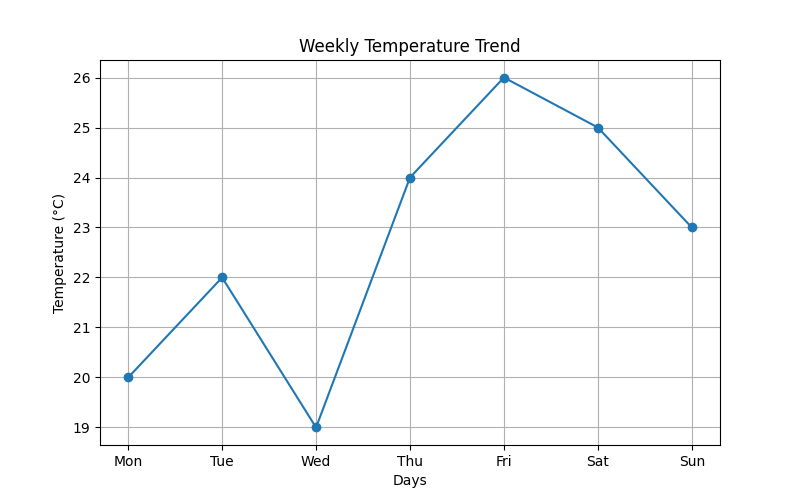
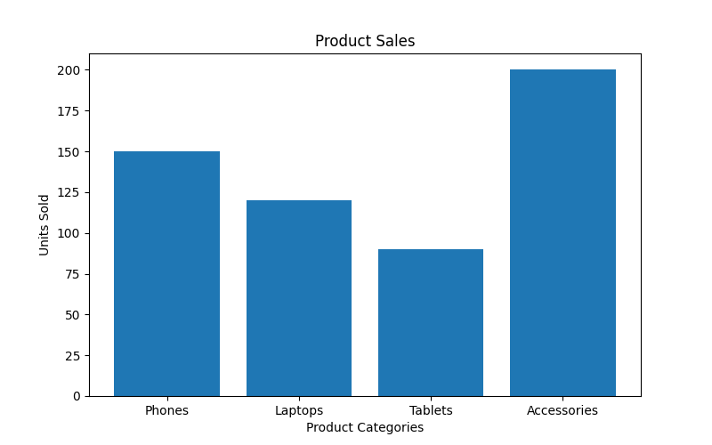
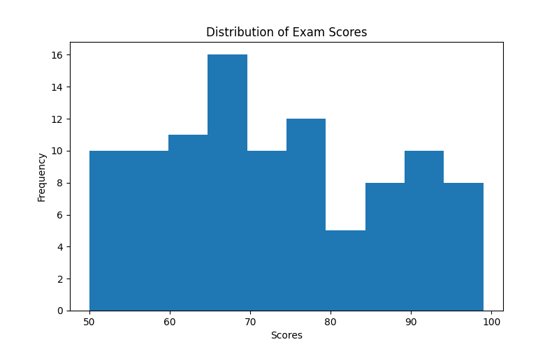
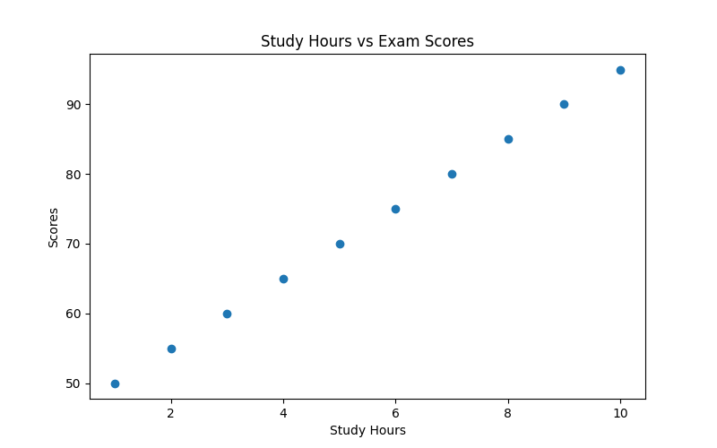
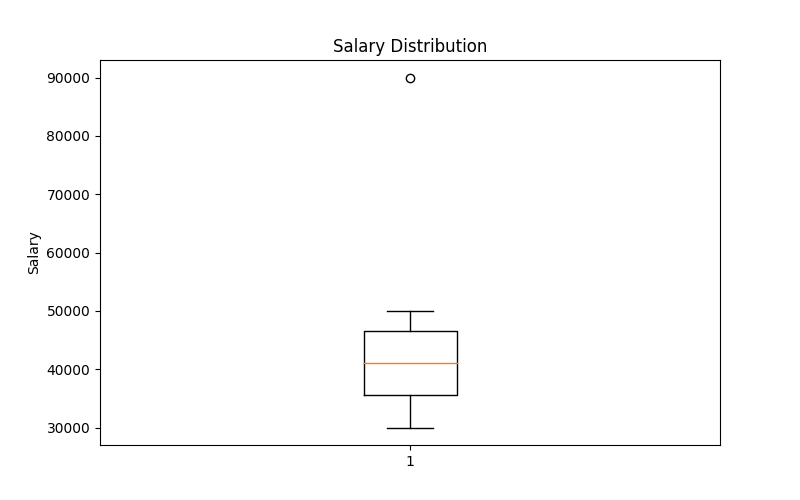

A line plot is useful for showing trends over time.
This graph displays the temperature changes during a week.

A bar chart is used to compare quantities between categories.
This graph compares sales across different product categories.

A histogram displays the distribution of numerical data.
This example shows the distribution of exam scores from students.

A scatter plot helps visualize relationships between two variables.
This graph compares study hours with exam scores.

A box plot summarizes data distribution and highlights possible outliers.
This example represents salary distribution.
